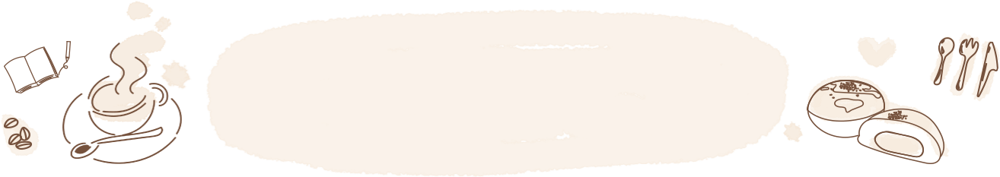
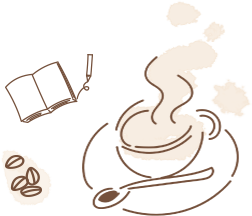
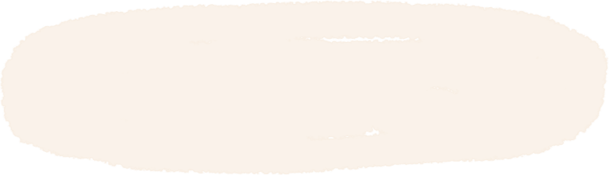
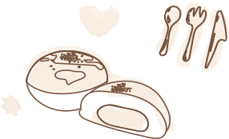
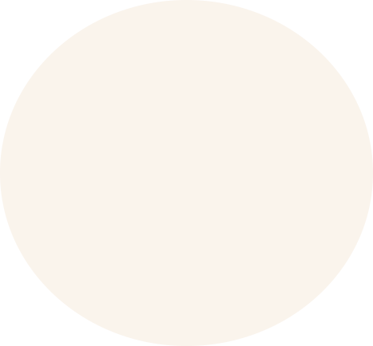
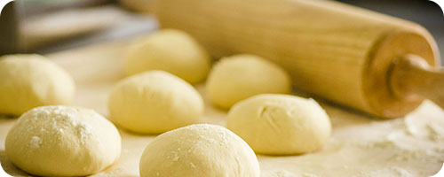
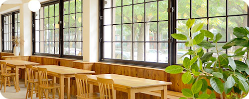
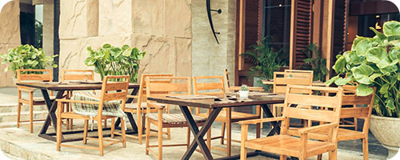

About us






Cafe and Bakery HIDАМARIは、
自然の光と木のぬくもりに包まれた ほっとひと息つける場所です。
丁寧に淹れたコーヒーと 毎日焼き上げるパンとともに
陽だまりのような やさしい時間をお届けします。
-

素材のこだわり
素材は、できるだけ国産のものを選んでいます。
また、保存料は使用せず、素材本来の風味を大切にしながら、
ひとつひとつ丁寧に仕込み、心を込めてご用意しています。 -

自然を感じられる店内
店内には自然の光がやさしく差し込み、
木のぬくもりを感じられる空間づくりを大切にしています。
忙しい日常の中で、ほっと心がゆるむ時間をお過ごしください。 -

小型犬と過ごせるテラス席
わんちゃんと一緒に過ごせる外テラス席もご用意しています。
お散歩の途中やゆったりしたひとときにぜひご利用ください。
※リードの着用をお願いいたします。